| 日付 | 2013年12月1日（日） |
|---|---|
| 山域 | 丹沢 |
| メンバー | グループ（男6女4子供1） |
| 山行形態 | 子連れ日帰り |
| アクセス | 電車、バス |
| ルート (Map) | 土山峠 (10:24) - (11:33) 辺室山 (12:32) - (13:16) 物見峠 - (14:25) 煤ヶ谷 - (14:53) 別所の湯 |
山の友人たちと忘年山行に行くことにする。
目的地は辺室山。丹沢前衛の小さな山だ。
辺室山の忘年山行は一昨年、昨年と計画を立てていたのだが、
晴天率が高い冬にもかかわらず2年連続、雨で流れていた。
今年は快晴予報となり、正に3度目の正直だ。
バスで土山峠に移動する。標高300m。
娘は久しぶりのバス乗車だったが、40分のあいだ大人しくしてくれていた。
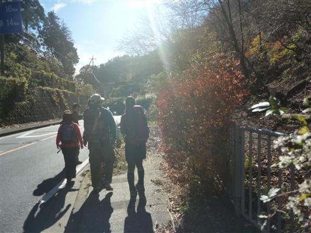
辺室山に向けて歩き始める。今回、子供は娘一人であとは大人のみだ。
最初からキャリアに乗せる予定でいたのだが、意外なことに歩き始める。
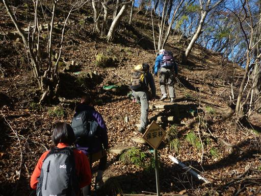
娘は少々足が遅いため、ゆっくりペースに合わせてもらう。
以前辺室山に登った時は、山頂まで一瞬だった記憶があるが、
子連れだと色々気を使うため、時間がものすごく長く感じる。
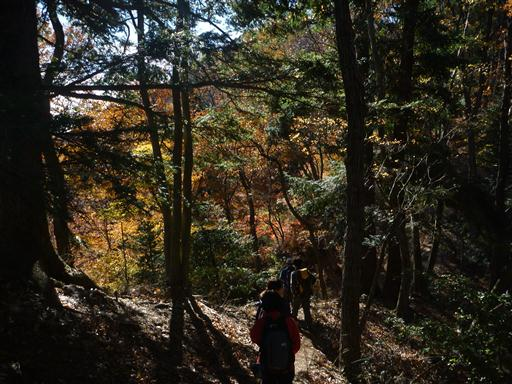
30分ほど歩いたら小休止をとる。
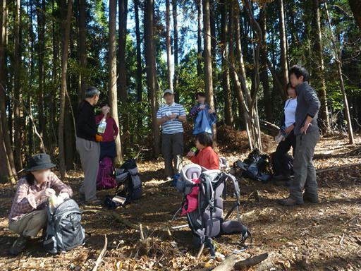
娘は手をつないで歩いてもらっている。
人見知りはだいぶ治まったとは思っていたが、ほぼ初対面で一緒に歩けるなんて
ずいぶん成長したものだ。
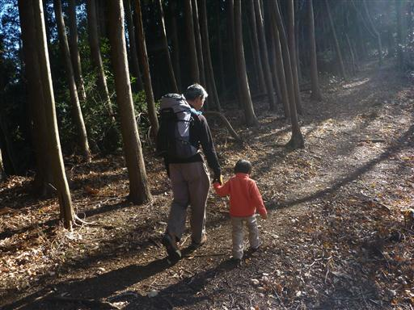
空には箒で掃いたような雲が広がっている。
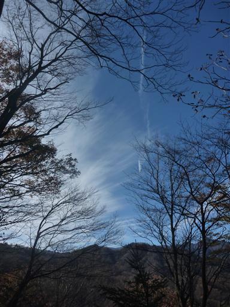
モミジの紅葉。鮮やかに紅葉している木が少ないだけにモミジはよく目立つ。
娘は途中で疲れたと言い出したため、キャリアに乗せることにする。
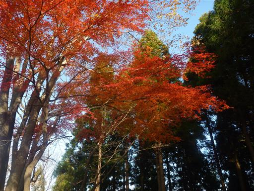
辺室山の山頂に到着。標高644m。
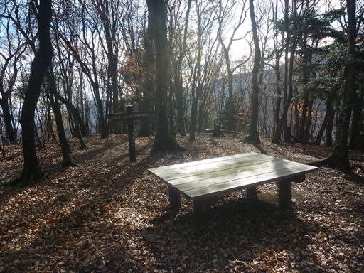
大きなテーブルに陣取って、昼食をとることにする。

皆が持ち寄った食事やお菓子。娘はお菓子をたくさんもらってご満悦だ。
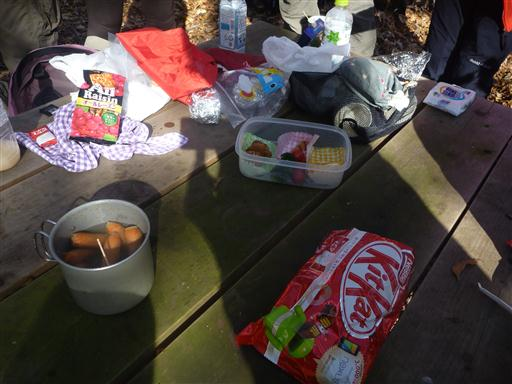
昼食をとったら、枝でチャンバラをしたり、落ち葉を集めたりして、遊んでもらっている。
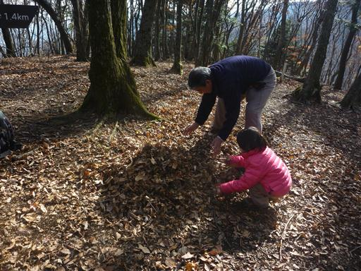
昼食をとったら物見峠を目指す。登山道はそれなりに急傾斜だ。
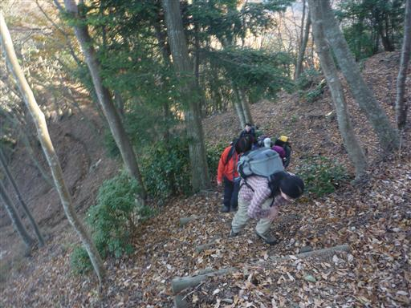
樹間からは仏果山などの姿が見える。
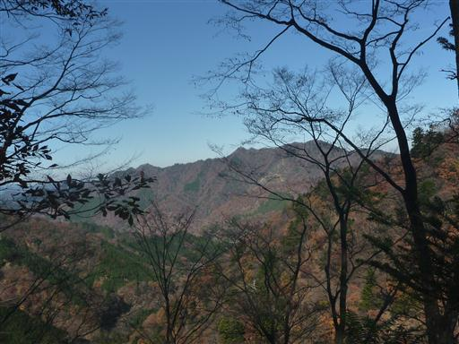
標高は低い山なのだが谷筋は非常に急峻だ。
この辺りも紅葉が美しい。
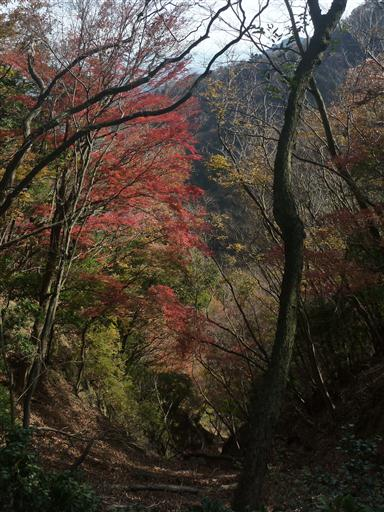
この地点が本日の最高地点。以前はここから登山道を外れて鍋嵐を目指した。
今回はここから登山道を辿って物見峠を目指す。
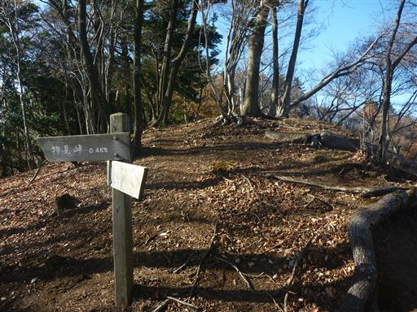
物見峠までは痩せ尾根が続く。案外危険な道だ。
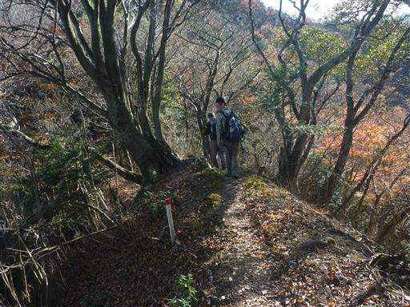
物見峠に到着。名前とは裏腹にそれほど素晴らしい展望が広がる訳ではない。
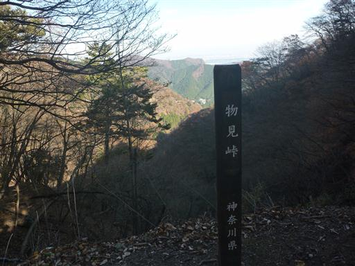
ここから先は急斜面に付けられたトラバース道が続く。
落石や足元に注意するよう警告する標識が立っている。
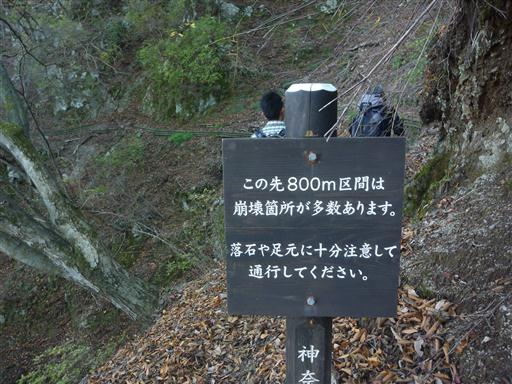
警告通り、細くて危険な道が始まる。
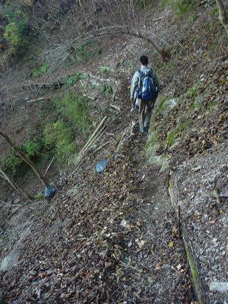
足元は不安定、頭上は樹木が邪魔して非常に歩きにくい。
子供を背負っているので尚更だ。
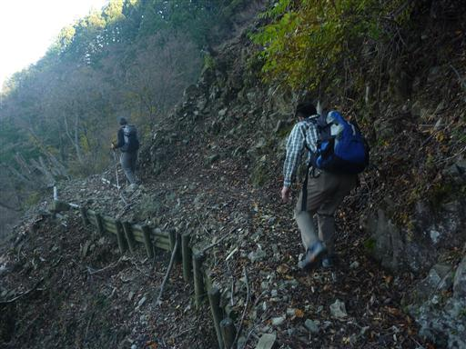
金網に大量の石や砂がたまっている。金網が破れるのは時間の問題だ。

ぐるりと谷を回り込むように登山道は続いている。
谷を隔てた向こう側には先ほど登った辺室山が見えている。
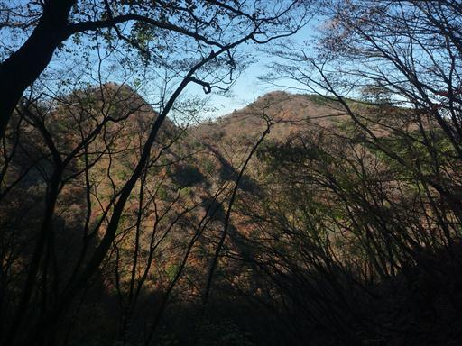
途中で、以前大山三峰山に行った際に使った道と合流し、煤ヶ谷に下山する。
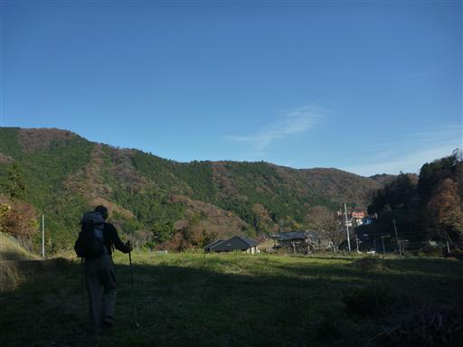
煤ヶ谷バス停に到着。標高140m。
バスの時間に20分間に合わなかったため、別所の湯まで歩いていくことにする。
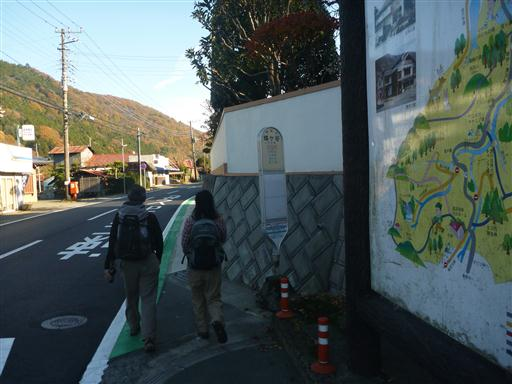
30分ほどで清川村ふれあいセンター別所の湯に到着。
温泉に入った後、相模大野駅まで移動。
妻、息子やその他の山友達と合流し、居酒屋に行って忘年会を行う。
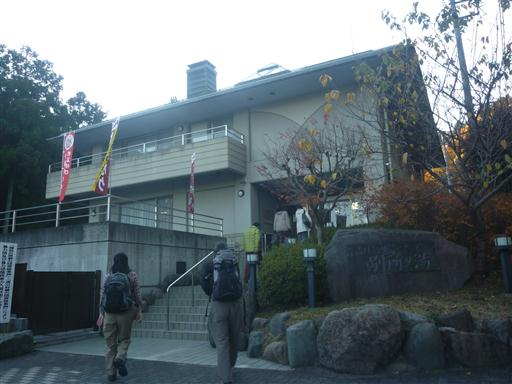